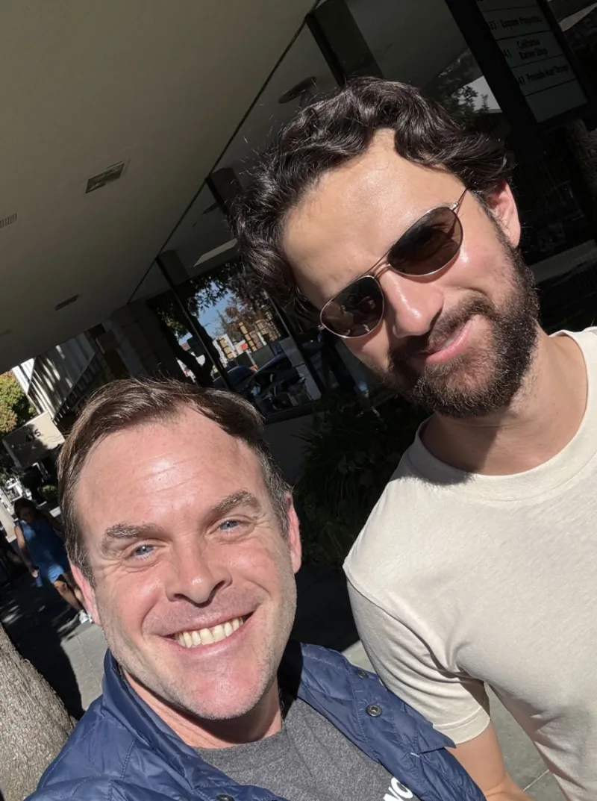

Donald Stalter
Founder, Sunshine Lake
True alpha doesn’t come from the obvious path. It comes from founders navigating extreme constraints — that shared psychological DNA that turns global outsiders into category leaders. We back that hunger from the very first check.
Donald Stalter founded Sunshine Lake, a seed fund that backs global breakout founders who leverage the Silicon Valley ecosystem. Don targets investments at the macro inflection points of geopolitical, economic, and technological change. This thematic flexibility enabled him to back multiple multi-billion-dollar businesses over the past decade.
Don generates proprietary deal flow through a dense network of unicorn founders and elite functional operators. He applies a rigorous, systematic approach to ensure Sunshine Lake identifies and executes on premier investments before the broader market reacts.
Before he launched Sunshine Lake, Don served as the North American Managing Partner for Global Founders Capital (GFC) for nearly a decade. There, his seed portfolio delivered an exceptional 19x liquid TVPI. He led early investments into category-defining companies such as Deel, Kalshi, Headway, and Assured.
Don’s hands-on operational background directly shapes his investment philosophy. He co-founded CityDeal, scaled the business, and sold it to Groupon for over $100 million. Subsequently, he restructured Groupon Japan on the ground during the Fukushima disaster. Later, he joined Airbnb and scaled its presence across Europe and the Asia-Pacific regions against fierce local competition. At Airbnb, he also built the Long-Term Stays and high-end tier divisions — multi-billion-dollar initiatives that drive significant revenue today.
Earlier in his career, Don worked in London private equity. He began as a San Francisco M&A banker and executed multi-billion-dollar cross-border transactions, including multiple landmark buy-side deals for Google.
Don attended the University of Chicago, studied under Nobel Laureates, and completed a year of study at the Free University of Berlin.
Education
University of Chicago — B.A. Economics and Cultural Studies
Dropped out — M.A. Global Econometrics and Quantitative Economics
Case Studies

Deel
Alex Bouaziz & Shuo WangVisa barriers after MIT prevented Alex and Shuo from pursuing traditional careers. They built Deel instead — the infrastructure powering global hiring.

Headway
Andrew AdamsAndrew struggled to find a therapist when he needed one. He built Headway to make mental healthcare accessible to millions.

Kalshi
Tarek Mansour & Luana Lopes LaraGlobal events move markets, yet individuals had no way to hedge that risk. Tarek and Luana built the first federally regulated prediction market.

Assured
Justin & TheoThe aggravation of dealing with insurance claims spurred Justin and Theo to attack a global sleeping giant. Assured built unique ML and data infrastructure for global automotive insurance.